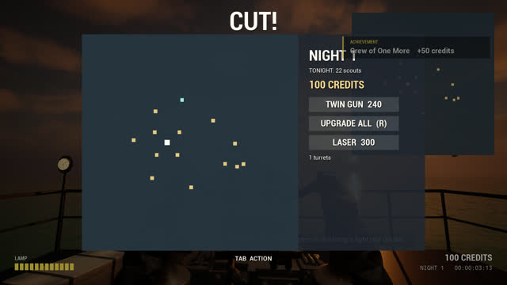

The log 7 entries
This is the working log of a four-day game. One developer directs; an AI coding agent (Claude Code) writes the code, drives the Unreal editor and runs the image, music and voice models on the same PC. Most 3D models come from Rodin, always made from our own pictures; the small props are made on the same PC. The agent writes each entry when the work reaches a checkpoint, not afterwards, so the log shows the order things really happened in, including what failed and what was cut.
Every picture from the image model is shown with the prompt that made it; every failure is marked in red and listed above. What the developer asked for and thought of each build is retold in the agent's words. Times are Danish time.
Day 1 Thursday 12 November
The goal for the day: the gun is fun in a storm at sea, and a packaged build starts from its zip. FYR's first version was made that day.
Day 2 Friday 13 November
The goal for the day: FYR rebuilt around the hut, the plan, the walk and the lighthouse; by about 19:00 the first playable loop, and the developer plays it. From 17:37: the whole game finished tonight, no new feature after 21:30, the last package at about 23:00.
-
 Day two: the rebuild, planned around the hut, the walk and three ways to fight
The developer's plan for a game he would want to play: plan the night at a PC in the keeper's hut, walk out into the storm, and fight from the lighthouse with a gun, a laser and the great lens, while a tablet can stop…
Day two: the rebuild, planned around the hut, the walk and three ways to fight
The developer's plan for a game he would want to play: plan the night at a PC in the keeper's hut, walk out into the storm, and fight from the lighthouse with a gun, a laser and the great lens, while a tablet can stop…
-

1 failure The skeleton runs: hut, walk, night, held, hut; and the first honest look at ray tracing The integrator's seams are in, and a bot plays the new loop for three nights, including a CUT on the tablet and a lost night shot again as TAKE 2. The render lane measures latency for the first time and compares ray… -
 2 failures
Catching up, part one: the hut from Rodin, a lens sent back, the tablet, and the rules of the night
This log fell four hours behind. This entry and the two after it catch up from what the lanes wrote down while they worked. Part one: the keeper's hut and everything in it as Rodin models from our own pictures, what…
2 failures
Catching up, part one: the hut from Rodin, a lens sent back, the tablet, and the rules of the night
This log fell four hours behind. This entry and the two after it catch up from what the lanes wrote down while they worked. Part one: the keeper's hut and everything in it as Rodin models from our own pictures, what…
- 1 failure Catching up, part two: rain on the graphics card, latency measured for real, photoreal rock, and explosions from Blender The storm got its own rain, wet rock, rain on the lantern glass and lightning that lights the cloud; Reflex latency was measured in a real window (7.5 to 8.8 ms on, 13 to 16 off) and ray tracing stays off by default…
-
 2 failures
Catching up, part three: the developer's first look and what each lane did, the first package, the newest tools, and a stop at 17:30
At 15:20 the developer gave his first verdicts on the rebuild: saucers in clumps, a dead map, a HUD below a shooter's standard, black screens between nights, fingers through the gun's handles. What each lane did about…
2 failures
Catching up, part three: the developer's first look and what each lane did, the first package, the newest tools, and a stop at 17:30
At 15:20 the developer gave his first verdicts on the rebuild: saucers in clumps, a dead map, a HUD below a shooter's standard, black screens between nights, fingers through the gun's handles. What each lane did about…
-
 3 failures
Friday evening: the first playable, the developer's notes as they came, and two things we got wrong
From 17:45 to 20:00. The lanes came back on another model, and the first playable was ready at 17:56 once the package's real fault was found. The developer played and kept sending notes; what each became: a chart that…
3 failures
Friday evening: the first playable, the developer's notes as they came, and two things we got wrong
From 17:45 to 20:00. The lanes came back on another model, and the first playable was ready at 17:56 once the package's real fault was found. The developer played and kept sending notes; what each became: a chart that…
No entry carries that tag yet.